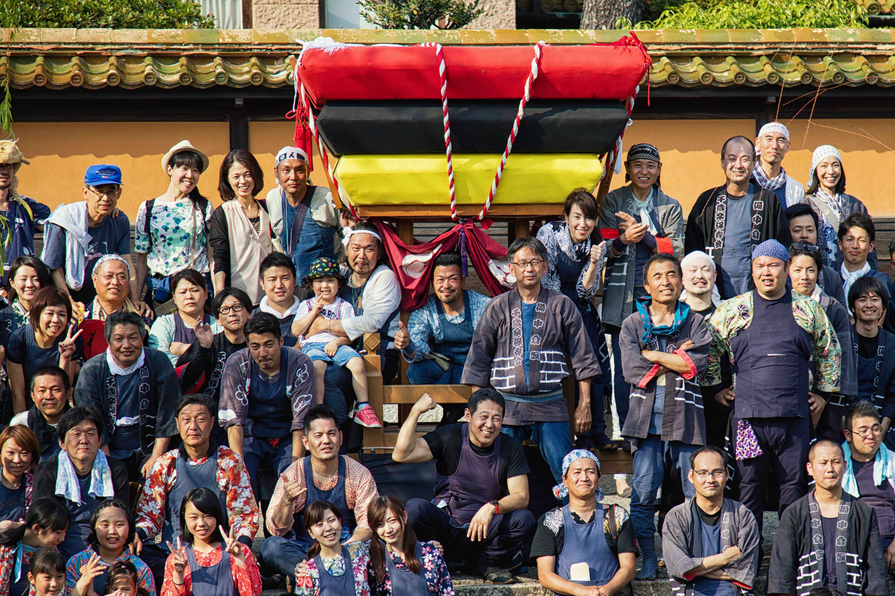
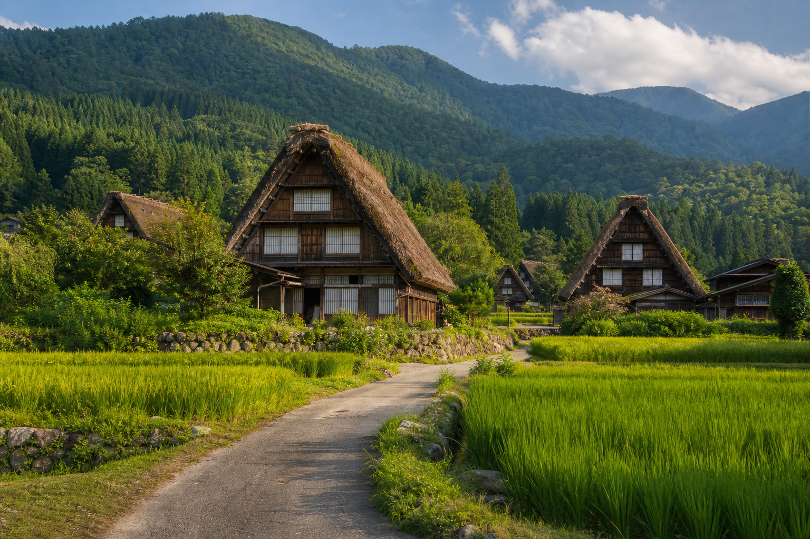

01
Tokio
Primer contacto con la capital: barrios emblemáticos, gastronomía y contraste urbano.
VIAJE EN GRUPO · ABRIL
Un viaje en grupo para conocer Japón con un recorrido organizado, alojamientos seleccionados y acompañamiento durante toda la experiencia.

EL VIAJE
La propuesta combina ciudades, barrios tradicionales, naturaleza y tiempo para descubrir cada lugar con calma. El programa detallado se facilitará a las personas inscritas antes de la salida.
RECORRIDO PREVISTO
Primer contacto con la capital: barrios emblemáticos, gastronomía y contraste urbano.

Paisajes de montaña, pueblos tradicionales y una mirada más pausada al país.

Templos, jardines, barrios históricos y una jornada dedicada a Nara.

Últimos días entre gastronomía local, ambiente nocturno y tiempo libre.
INFORMACIÓN PRINCIPAL
Viaje en grupo a Japón